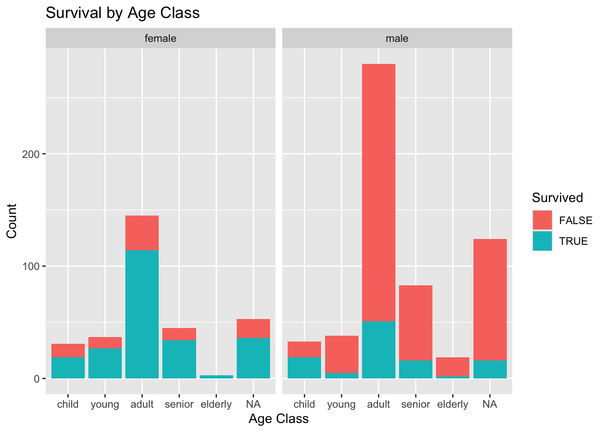
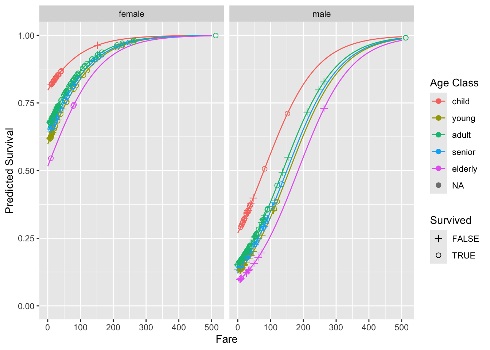

example_url <- function(example) {
url = paste0("https://paolobosetti.quarto.pub/data/", example)
return(url)
}Example Data
During the courses, example data files are used to illustrate different concepts. These files are available here for download or for direct usage.
Loading the data files
Each data file can be separately loaded from the URLs reported down below. Nonetheless, you can also exploit the ability of R read* functions to open a file directly from its URL. To do so, it can be useful to define a utility function like the following:
Load this function in your script or put it into a utility library. Then, just pipe it with the proper file-reading function, e.g.:
example_url("timeseries.csv") %>% read_csv()or
example_url("3dprint.dat") %>% read_table(comment="#")List of CSV files
List of DAT files
Example
Let’s look at the train.csv file from the Titanic dataset. We load the dataset and perform some basic data manipulation to only keep the relevant columns. We also classify the passengers into age classes.
titanic <- example_url("train.csv") %>%
read_csv(show_col_types = FALSE) %>%
mutate(
Survived = as.logical(Survived),
Pclass = as.factor(Pclass),
AgeClass = cut(Age, breaks=c(0, 10, 18, 40, 60, Inf), labels=c("child", "young", "adult", "senior", "elderly")),
Age = as.factor(Age)
) %>%
select(
PassengerId,
Survived,
Pclass,
Sex,
Age,
AgeClass,
Fare
)
titanic %>% head() %>% knitr::kable()| PassengerId | Survived | Pclass | Sex | Age | AgeClass | Fare |
|---|---|---|---|---|---|---|
| 1 | FALSE | 3 | male | 22 | adult | 7.2500 |
| 2 | TRUE | 1 | female | 38 | adult | 71.2833 |
| 3 | TRUE | 3 | female | 26 | adult | 7.9250 |
| 4 | TRUE | 1 | female | 35 | adult | 53.1000 |
| 5 | FALSE | 3 | male | 35 | adult | 8.0500 |
| 6 | FALSE | 3 | male | NA | NA | 8.4583 |
Let’s plot the survival rate by age and sex class, as a histogram.
titanic %>%
ggplot(aes(x=AgeClass, fill=Survived)) +
geom_bar() +
facet_wrap(~Sex) +
labs(title="Survival by Age Class", x="Age Class", y="Count", fill="Survived")
In a more refined way, we can build a generalized linear model of binomial type🇮🇹 to predict the survival rate based on the fare, age class, and sex:
model <- glm(Survived ~ Fare + AgeClass + Sex, data=titanic, family=binomial)
pred <- expand.grid(
Fare = seq(0, 500, 5),
AgeClass = levels(titanic$AgeClass),
Sex = c("female", "male")
) %>%
add_predictions(model, var="pred.glm", type="response")
titanic %>%
add_predictions(model, var="pred.glm", type="response") %>%
ggplot(aes(x=Fare, y=pred.glm, color=AgeClass)) +
geom_line(data=pred) +
geom_point(aes(shape=Survived), size=2) +
coord_cartesian(ylim=c(0, 1)) +
facet_wrap(~Sex) +
scale_shape_manual(values=c(3, 1)) +
labs(y="Predicted Survival", color="Age Class")
A word to the wise
According to our analysis, if you embark the Titanic, you better be a young and rich female 😉.